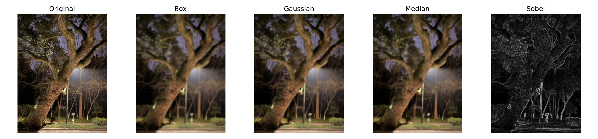
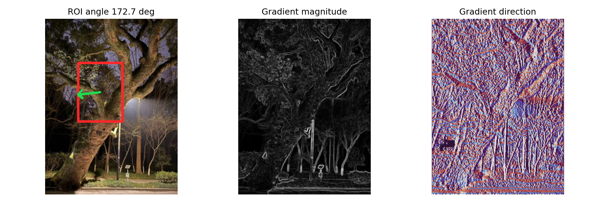
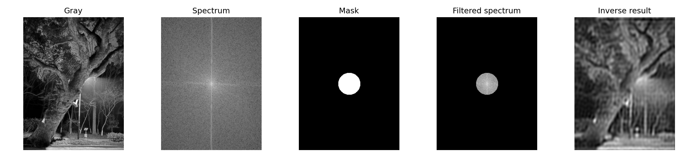
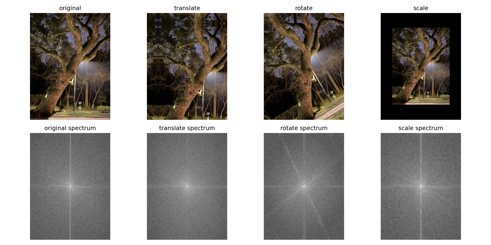

| 作业主题 | 空间域与频率域图像滤波交互实验 |
| 应用形式 | Streamlit Web 应用 |
| 核心源码 | src/image_filtering.py |
| 使用 Agent/LLM | Codex GPT-5 |
| 外链 URL | 可选：部署后填写 Streamlit Cloud 公网 URL |
参考文件夹中的 streamlit-homework-builder skill，完成新题目“Vibe Coding 图像滤波”。 要求： 1. 实现常见的空间图像滤波器，包括 Box、Gaussian、Median、Sobel，并在同一张图片上进行视觉与数值比较。 2. 实现图像梯度算法演示：输入图片后可以框选局部区域，计算并显示该区域的梯度方向、梯度强度，并在图片上画出方向箭头。 3. 实现频率域图像滤波操作：基于傅里叶变换与反变换，绘制中心化频谱图、频域滤波掩膜、滤波后频谱和反变换结果。 4. 比较图像在旋转、平移、缩放下的谱图变化。 5. 做成可交互的桌面 app 或 web 应用形式，优先使用 Streamlit，保留默认图片与上传替换功能。 6. 生成提交材料：PDF 实验报告，报告中包含 prompt、截图、小结；提供核心源码 py 文件；可外链 URL 可选。 7. 在报告中列出所使用的 Agent 或 LLM：Codex GPT-5。 保存到新建的 a2 文件夹。
空间滤波部分实现 Box、Gaussian、Median 和 Sobel。Box/Gaussian 通过手写二维卷积完成，Median 使用反射边界和滑动窗口中值，Sobel 输出梯度幅值与方向。
梯度演示部分允许在应用侧通过滑块选择 ROI，程序对该区域的 Sobel gx、gy 求均值，并用 atan2 计算平均梯度方向，在原图上绘制矩形框和方向箭头。
频域滤波部分先将灰度图做 FFT，并使用 fftshift 得到中心化频谱；再构造低通、高通或带通圆形掩膜；最后通过 ifftshift 与 ifft2 反变换得到滤波结果。
谱图变化部分对原图分别做平移、旋转、缩放，再绘制对应幅度谱，用于观察空间几何变换和频域幅度分布之间的关系。




# 作业小结：Vibe Coding 图像滤波 本次作业完成了一个基于 Streamlit 的交互式图像滤波实验应用。应用支持上传图片，也提供默认图片，便于直接运行演示。 实现内容包括： - 空间域滤波：Box 平滑、Gaussian 平滑、Median 中值滤波、Sobel 边缘检测。 - 梯度演示：通过滑块框选局部 ROI，计算 Sobel 梯度的平均方向和强度，并在原图上绘制方向箭头。 - 频率域滤波：使用 NumPy FFT 进行傅里叶变换、频谱中心化、低通/高通/带通掩膜滤波和反变换重建。 - 谱图变化比较：展示原图、平移、旋转、缩放后的图像及频谱图，观察频域特征变化。 主要观察： - Box 和 Gaussian 都能抑制噪声并平滑细节，Gaussian 对中心像素权重更高，视觉上更自然。 - Median 对脉冲噪声和孤立异常点更稳健，但窗口过大时会抹去细线结构。 - Sobel 对亮度突变敏感，适合观察边缘方向和梯度强度。 - 频域低通保留整体轮廓但削弱细节，高通突出边缘和纹理，带通保留特定尺度的结构。 - 平移主要改变相位，幅度谱变化较小；旋转会带动谱图方向旋转；缩放会使空间尺度与频率分布呈反向变化。 使用 Agent/LLM：Codex GPT-5。